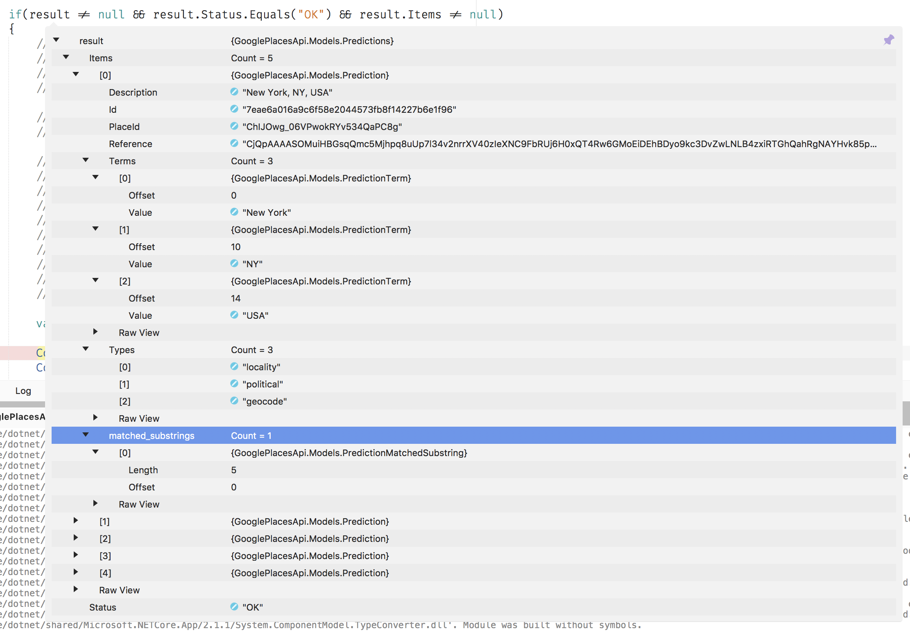
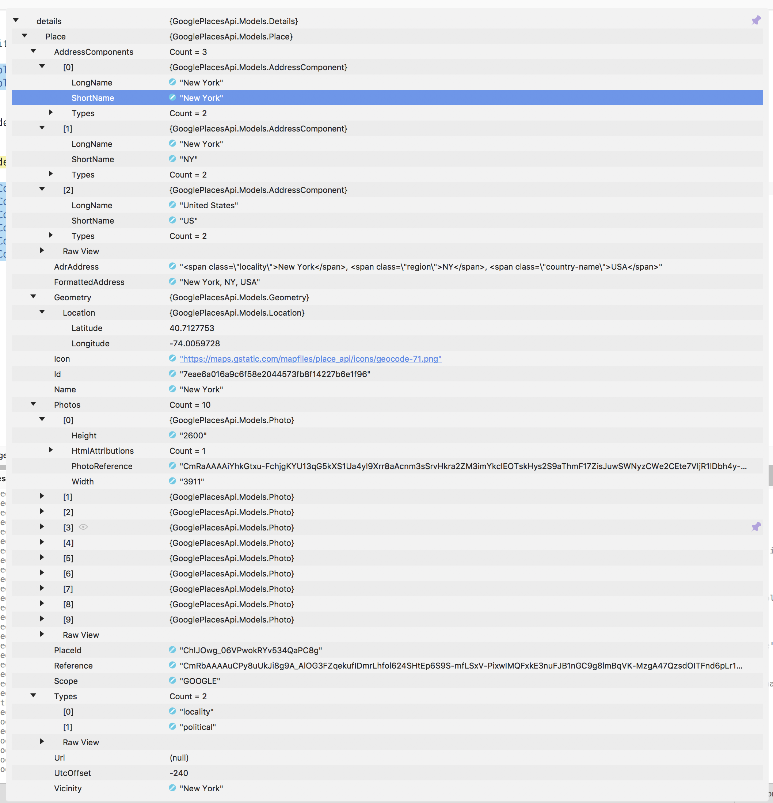

Google Places Api¶
The Google Places API can be used to find locations and their details like geolocation, address and other data. It returns a predicted list of locations based on the input string. In this post I will show some details about the plugin I created.
Introduction¶
More than a year ago I created a store locator in a Xamarin.Forms app with the Google Places API. I liked the simplicity and configurability of the API and already had the idea of creating a plugin to reuse the code. After releasing the app I never got back into the code and just forgot about it until last week when I had to implement almost exactly the same functionality in a different app.
I don’t like to repeat myself but because of the tight project schedule I just didn’t have the time to create a public, readable and documented package but I had some time to spend during the weekend so I sat down and created the Google Places Api nuget package.
Before you start¶
The Google Places API needs to be enabled in the developer console and also needs a valid paying account, although you won’t be charged (depending of the level of details requested). Read more about billing here.
If your application displays data from the Places API on a page or view that does not also display a Google Map, you must show a Powered by Google logo with that data.
Using the plugin¶
Make sure you have enabled the Google Places Api in the developers console. Get an api Key and install the nuget package in your project.
Using the settings builder¶
The plugin can be configured with different settings by using the settings builder:
var settings = GoogleApiSettings.Builder
.WithApiKey("api_key")
.WithLanguage("nl")
.WithType(PlaceTypes.Address)
.WithLogger(new ConsoleLogger())
.AddCountry("nl")
.Build();
Only the api key is required, all other settings are optional. Detailed information about the parameters is available here but in short:
Language: two letter iso code. Results are biased to the selected language so setting it might give better results.
Type: The types of place results to return. If no type is specified, all types will be returned.
Countries: you can add up to 5 countries. Results will be restricted to locations in the provided country.
Logger: this is not an API setting. If you want logging of the API calls and results you can implement your own logger or use the provided console logger.
Calling the API for predictions¶
The request:
var settings = GoogleApiSettings.Builder.WithApiKey("SAMPLE_API_KEY")
.WithType(PlaceTypes.GeoCode)
.Build();
var service = new GooglePlacesApiService(settings);
var result = await service.GetPredictionsAsync("new y").ConfigureAwait(false);
The results:

Getting details¶
The information in the returned result is not giving any detailed location information. To get more information about a location another API call is needed.
The request:
var details = await service.GetDetailsAsync("ChIJOwg_06VPwokRYv534QaPC8g")
.ConfigureAwait(false);
The result:
